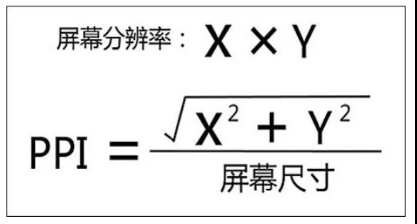

hello world1
hello world2
hello world3
hello world4
px, em, rem, vw(vh), %
- px：绝对单位，页面按精确像素展示
- em：相对单位，基准点为父节点字体的大小，如果自身定义了font-size按自身来计算，整个页面内1em不是一个固定的值
- rem：相对单位，可理解为root em, 相对根节点html的字体大小来计算
- vw(vh)：主要用于页面视口大小布局，在页面布局上更加方便简单
- %：百分比宽泛的讲是相对于父元素（看下面三条）
- 对于普通定位元素就是我们理解的父元素
- 对于position: absolute;的元素是相对于已定位的父元素
- 对于position: fixed;的元素是相对于 ViewPort（可视窗口）
像素
- 设备像素比为1:1时，1个CSS像素 = 1个设备独立像素 = 1设备像素
- 设备像素比为2:1时，1个CSS像素 = 1个设备独立像素 = 2设备像素
- 设备像素比为3:1时，1个CSS像素 = 1个设备独立像素 = 3设备像素
- 每英寸像素(PPI) (受屏幕分辨率和尺寸影响)
- 设备像素比(DPR) (受缩放影响，这里的缩放可能是浏览器缩放，也可能是分辨率缩放)
设备像素
- 设备像素 = 物理像素 （设备像素的单位：pt）
- 设备独立像素 = window.screen.width / window.screen.height （它是虚拟像素）
- DPR = 设备像素 / 设备独立像素 （可以通过window.devicePixelRatio获取）
- 每英寸像素 
例子
- 分辨率1366 * 768, DRP = 1, 1px = 1设备独立像素(1366 / 768)
- 分辨率1920 * 1080, DRP = 1, 1px = 1设备独立像素(1920 / 1080)
- 结论：要适配无需考虑屏幕尺寸，要考虑屏幕分辨率(window.screen.width * window.devicePixelRatio = 分辨率宽)
- 什么是自适应，什么是响应式
- 如何适配
- 使用(rem,em,vw,%)都可以适配, 不过一般使用(rem, vw)
- rem只能自适应字体大小，不能自适应元素的长宽
- 对于浏览器来说，字体最小12px，要使用rem自适应字体，使用vw自适应出字体以外的其他元素
- 使用postcss-px-to-viewport 将px 转换成视宽
- 使用postcss-px2vw 将px 转换成视宽
例子2
- 对于字体来说，浏览器最小就要显示12px大小。
- UI出设计的时候，要考虑如果是1920*1080的字体为12px的时候，1366*768是否要小于12px
- 如果PC项目已经使用px，有以下两种方式处理可以响应式
- A:字体转rem，其他转vw(vh)
- B:全部转vw(vh)，涉及字体的样式需要微调
- 移动端需要移动端的设计，不推荐使用pc的像素，尺寸
postcss-px-to-viewport
- 不转换行内样式？
- 如何处理字体？
- 如果真需要转换字体，就必须使用rem。将字体全部设置成rem，而且要监听屏幕改变重新设置font-size